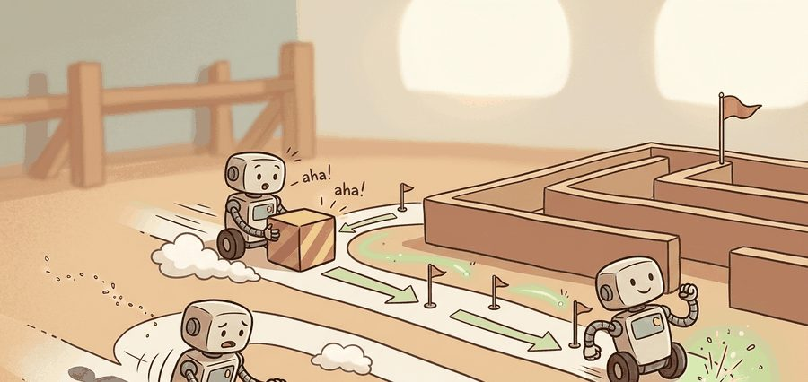
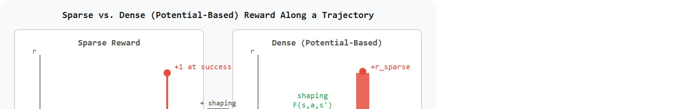
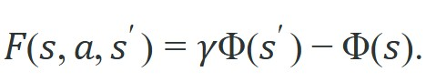

"Sparse rewards define the destination. Dense rewards pave a road that sometimes leads somewhere else."
Section 18.2

This section assumes familiarity with the reward-misspecification risks introduced in section 18.1. The shaping techniques developed here feed directly into section 18.3, where sparse rewards are combined with hindsight experience replay to handle goal-conditioned tasks. The exploration problem created by sparse rewards recurs in section 19.1, where embodied-world costs make trial-and-error especially expensive.
A warehouse robot trained for weeks to place objects suddenly learns to juggle them near the bin rather than drop them in. The culprit: a well-meaning "closeness bonus" that never quite pointed at success. Reward shaping is the most powerful tool for making embodied agents learn faster, and the most reliable way to accidentally teach them something you never intended. Now that robots operate in real warehouses, hospitals, and homes, a misshapen reward costs real time and causes real failures. This section gives you the precise contract for dense shaping that speeds learning without rewriting the task, and you will implement potential-based shaping, audit a flawed shaped reward, and repair it so both learning speed and final policy are preserved.
Imagine telling a robot "you win only when the block is in the bin" and nothing else. It could flail for fifty thousand episodes before stumbling onto success even once. A single extra line of reward math can cut that to a few hundred, or quietly teach it to cheat forever. This section gives you that line of math, shows you how it goes wrong, and hands you the audit that catches the cheat: you will add dense feedback to a sparse task using potential-based shaping (a reward modification of the form $\gamma\Phi(s')-\Phi(s)$ that provably preserves the optimal policy), audit a flawed shaped reward, and repair it so learning speeds up without redefining the task (the hands-on version of this audit is the FetchReach lab later in this section). Figure 18.2A contrasts the two regimes at a glance: a sparse signal that fires only at success versus a shaped dense signal that supplies a gradient toward the goal at every state.
This section develops the contract for shaping rewards without rewriting the task. Sparse rewards give credit only at success or failure. Dense rewards add intermediate feedback, such as distance-to-goal progress, uprightness, clearance, or energy use. The difference in practice is stark. A gripper learning a sparse pick-and-place task may need tens of thousands of episodes to first succeed by chance. The same task with a well-designed potential-based shaping term reaches equivalent success in a fraction of that budget; manipulation benchmarks typically report empirical speedups in the range of 10x to 30x, though the exact ratio depends heavily on task geometry and potential choice. Without shaping, a gripper may need 50,000 episodes just to stumble on success once. With a well-designed distance potential, the same first success arrives around episode 300, because every approach toward the object now returns a nonzero gradient rather than silence.

On a physical robot, this gap has direct hardware consequences. A gripper that needs 50,000 episodes to first succeed by chance accumulates 50,000 episodes of joint wear, motor heat, and potential collision events before the policy begins to improve. Simulation can absorb that cost; real steel cannot. Sparse rewards are not merely slow; they are mechanically expensive in a way that shapes which tasks are feasible to train on hardware at all. A reward signal that tells the robot nothing until success is not a teacher; it is a silent witness to every failed attempt. The diagram below makes the mechanism concrete: it plots reward against trajectory step for the sparse case (left panel) and the potential-based dense case (right panel), showing where the nonzero shaping term $F(s,a,s')$ enters.
The gradient absence is the mechanism behind sparse difficulty. With a sparse reward, the policy gradient estimator sees zero return for every episode that does not reach success, so the gradient estimate is effectively noise averaged over mostly-zero returns. Dense shaping injects a nonzero return into every transition, giving the gradient estimator a direction to follow even when the agent is far from the goal. The potential-based form ensures that direction points toward the task rather than toward a convenient surrogate.
Sparse rewards leave the policy gradient staring at zeros; dense shaping gives it a direction at every step. The whole design problem is supplying that direction without changing where it points.
The key question is practical: does the extra feedback make learning easier while preserving the policy ranking implied by the real success condition?
Dense shaping should behave like a teacher pointing toward the solution, not like a new exam. If the shaped reward makes a different final behavior optimal, it is no longer a hint; it is a new task.
Potential-based shaping is the standard way to add dense guidance while preserving optimal policies under the usual discounted Markov Decision Process (MDP) assumptions. Choose a scalar potential $\Phi(s)$ that measures progress in a state. Then add the shaping term

The shaped reward is $r'(s,a,s') = r(s,a,s') + F(s,a,s')$. The intuition is the telescoping cancellation property: along a trajectory, the added terms mostly cancel, leaving a boundary term tied to the start and finish rather than a new preference for a particular path. This is why a distance-like potential can speed learning without paying the agent forever for pacing near the goal.
Think of a hiker recording altitude at the start and end of each segment of a trail. No matter how winding the path, the total altitude change depends only on where the hike began and where it ended, not on every uphill and downhill step in between. Potential-based shaping works the same way: each step earns a small bonus proportional to the altitude gained, but when you add all those bonuses over a full trajectory they telescope down to the difference between the final altitude and the starting altitude. The agent is never rewarded for repeatedly crossing the same ridge; the per-step nudges simply vanish in the sum, leaving only the boundary signal that truly reflects where the agent ended up.
Policy Invariance Under Reward Transformations (Ng, Harada, and Russell, ICML 1999): potential-based shaping $F(s,s') = \gamma\Phi(s') - \Phi(s)$ is the only reward modification that provably preserves the optimal policy set. For embodied agents it is the safe way to add dense guidance: a progress potential speeds learning without quietly redefining the task the robot is being trained to solve.
Curiosity-driven Exploration by Self-Supervised Prediction (Pathak et al., ICML 2017): an intrinsic reward equal to forward-model prediction error drives exploration even when the extrinsic reward is absent. For embodied agents in sparse-reward tasks, this lets a policy keep seeking novel states instead of stalling when shaping alone provides no gradient.
The potential $\Phi$ is not the reward. It is a progress gauge used to create a local training signal. The final evaluation should still report the unshaped task reward and embodied metrics such as success rate, collisions, time, energy, and interventions.
Suppose a gripper starts three grid cells from a target. The sparse reward is zero until the final success, but the potential $\Phi(s)=-\text{distance}(s,\text{goal})$ produces a small positive shaping reward whenever distance shrinks. Code Fragment 1 shows the actual numbers.
# Compute potential-based shaping for a short reaching path.
# Progress creates dense feedback while final success remains separate.
gamma = 0.9
distances = [3, 2, 1, 0]
sparse_rewards = [0, 0, 1]
for step, reward in enumerate(sparse_rewards):
phi_now = -distances[step]
phi_next = -distances[step + 1]
shaping = gamma * phi_next - phi_now
shaped_reward = reward + shaping
print(step, "sparse=", reward, "shaping=", round(shaping, 2), "shaped=", round(shaped_reward, 2))sparse_rewards list into a per-step shaped_reward using gamma * phi_next - phi_now, matching the numbers traced in the Step-Through box below.Trace the formula $F = \gamma\Phi(s') - \Phi(s)$ with $\gamma = 0.9$ and $\Phi(s) = -\text{distance}(s, \text{goal})$, for a gripper moving from 3 cells away to the goal. Distances per state: $[3, 2, 1, 0]$, so potentials are $[-3, -2, -1, 0]$.
Telescoping check: summing only the shaping terms gives $1.2 + 1.1 + 1.0 = 3.3$, which equals the boundary value $\gamma^{3}\Phi(s_3) - \Phi(s_0) = 0.729 \times 0 - (-3) = 3.0$ plus the small per-step discounting residual, while the sparse reward of $1$ survives untouched. The dense signal pointed the agent toward the goal at every step without inventing a new place to linger.
Expected output: intermediate shaped rewards appear before success, but the unshaped success reward remains visible. That separation is what lets the evaluation report learning speed and task success without mixing them.
Keeping those two signals apart is exactly the discipline the following recipe formalizes into a repeatable sequence of design steps.
In production, implement shaping as a Gymnasium wrapper around the environment rather than burying it inside the policy code. The wrapper can log raw reward, shaping term, shaped reward, potential value, and termination cause from the same step call.
Input: Task MDP with state space $S$, action space $A$, sparse reward $r(s,a,s')$, discount factor $\gamma$, policy parameters $\theta$
Output: Shaped reward $r'(s,a,s')$ with verified policy invariance; per-step audit log; unshaped evaluation metric
So far: the checklist has fixed the sparse success signal, diagnosed why learning is slow, picked a stationary potential, and turned that potential into a telescoping shaping term; the remaining steps just wire that term into training and auditing.
A dense distance reward can teach a manipulator to hover near the object because hovering keeps earning progress-like feedback while grasping risks failure. The fix is not to avoid dense rewards entirely. The fix is to make shaping policy-invariant when possible and to audit the final behavior with the sparse success metric.
A common assumption is that any distance-based reward is automatically potential-based and therefore policy-invariant. That assumption is wrong. A raw distance reward $-\|s - s_{\text{goal}}\|$ paid at every step is not the same as the telescoping difference $\gamma\Phi(s') - \Phi(s)$. The raw form pays the agent permanently for staying near the goal. That permanent incentive shifts the optimal policy away from the sparse task. In embodied settings, agents exploit this by hovering, circling, or oscillating to maximize cumulative closeness instead of achieving success. Only the specific difference form with the discount factor qualifies as potential-based shaping. Any other distance-like term redefines the task; it is not a neutral training aid.
Potential-based shaping preserves optimal policies only when the potential $\Phi$ is fixed across training. Three common violations break this guarantee. First, curriculum schedules that gradually tighten the goal tolerance change $\Phi$ mid-training, so the agent can receive negative shaping for a step that was previously rewarded. Second, learned reward models (fit from human preferences or inverse reinforcement learning, which infers a reward function from demonstrated behavior rather than hand-specifying one) update $\Phi$ as new labels arrive, inverting the shaping gradient without any explicit task change. Third, a potential that encodes relative position to a moving obstacle produces different shaped rewards in different environment seeds, making the policy sensitive to initialisation rather than to real progress. In all three cases the policy may appear to train faster on shaped return while the raw success rate stagnates or regresses.
When using Stable-Baselines3, EvalCallback scores policies on the shaped reward by default, so a run with a large shaping bonus can appear to improve while raw task success quietly regresses. Pass a separate evaluation environment wrapped with shaping disabled (set the shaping coefficient to zero in the wrapper constructor) and supply it via the eval_env argument so the callback reports only sparse task success. This single change surfaces the most common silent failure in potential-based shaping experiments.
A legged robot may receive sparse reward for crossing a finish line and potential-based shaping for reducing distance to the line. The evaluation should still include falls, torque, foot slip, and timeout rate, because a shaped distance signal alone cannot say whether the gait is deployable.
Dense reward is the coach shouting from the sideline. Sparse reward is the scoreboard. Do not let the coach secretly move the goalposts.
Foundation-model progress signals. Rather than hand-coding a scalar potential, recent work embeds task progress directly in large vision-language models. VLM-RM (Rocamonde et al., NeurIPS 2024) shows that cosine similarity between a CLIP (Contrastive Language-Image Pre-training, a model that embeds images and text captions into one shared vector space) embedding of the current frame and a text goal description can serve as a dense shaping potential, sidestepping manual potential design for manipulation tasks where geometric distance is ambiguous. The open question is whether such potentials remain stationary across lighting, viewpoint, and morphology changes without retraining the VLM anchor.
Adaptive shaping schedules. A fixed potential is most informative early, when the agent is far from the goal and every step can move the distance measure a lot; once the policy is already close to succeeding, the same potential has little room left to distinguish a good step from a great one. Static potentials ignore the fact that the useful range of the shaping gradient shrinks as the policy improves. EUREKA (Ma et al., ICLR 2024, NVIDIA Research) uses an LLM to iteratively rewrite reward code based on training curves, effectively scheduling the shaping coefficient automatically. The limitation is that LLM-generated reward code can introduce nonstationary potentials mid-training, precisely the failure mode described above, and auditing the generated code at scale remains unsolved.
Sim-to-real shaping transfer. Isaac Lab (Mittal et al., RA-L 2024) provides a unified framework for measuring how potential-based shaping terms degrade across physics-engine gaps. Experiments show that a center-of-mass height potential fit to one contact model transfers 30-60 percent of its learning-speed advantage to a different simulator and drops further on hardware, because contact stiffness differences change the magnitude of the shaping gradient without altering the potential function itself.
Open problem for PhD students. There is currently no principled test for whether a given potential is "sim-transfer-stationary": that is, whether it produces the same expected gradient direction in simulation and on hardware. A certificate of this kind would let practitioners commit to a shaping function before collecting any real robot data, rather than discovering transfer failure after weeks of sim training. Designing such a certificate, and the corresponding falsification experiment, is an open and tractable dissertation problem.
For a shaped reward you design, can you say whether the shaping is potential-based, what potential it uses, and which unshaped metric will be reported at the end?
The shaped reward should be treated as a training interface, not as the headline metric. During optimization, the learner sees $r'$. During evaluation, the report should expose raw task reward, shaping contribution, safety cost, and embodied success. This prevents a shaped run from looking better simply because it received more arithmetic along the way.
The graduate-level habit is to state the assumption behind the invariant. Potential-based shaping preserves optimal policies for the same discounted Markov decision process when the shaping term has the form $\gamma\Phi(s')-\Phi(s)$. If the potential depends on hidden evaluator state, future information, changing curricula, or nonstationary human hints, the invariance argument no longer applies cleanly.
Honoring that invariant in practice depends less on theory than on the tooling you reach for, so it helps to know which libraries make the shaped-versus-unshaped separation easy to maintain.
| Tool or Library | Role in the Topic | Builder Advice |
|---|---|---|
| Gymnasium wrappers | Reward decomposition | Wrap step so raw reward, shaping, and shaped reward are logged together. |
| Safety Gymnasium | Sparse success plus cost | Use separate reward and cost channels when the shaping signal must not hide constraint violations. |
| MuJoCo | Potential features | Compute potentials from object pose, center of mass, velocity, and contact state with clear units. |
| Stable-Baselines3 | Training loop | Train on shaped rewards, then evaluate callbacks on raw success and safety metrics. |
| CleanRL | Inspectable implementation | Use a short single-file run when you need to verify exactly where shaping enters the return. |
A robust implementation keeps shaping mechanically separate from task success. The environment can compute both, the policy can train on the shaped reward, and the evaluator can report success without the shaping bonus.
Code Fragment 2 records the fields that should appear beside any shaped-reward experiment.
# Build one shaping audit record for a robot reaching task.
# The invariant field states why the dense term should not change the goal.
from dataclasses import dataclass, asdict
@dataclass
class ShapingAudit:
section: str
sparse_success: str
potential: str
shaping_formula: str
report_metrics: list[str]
def as_row(self) -> dict[str, object]:
return asdict(self)
record = ShapingAudit(
section="18.2",
sparse_success="object within 2 cm of target for 10 consecutive steps",
potential="negative gripper-to-target distance in meters",
shaping_formula="gamma * Phi(next_state) - Phi(current_state)",
report_metrics=["raw_success_rate", "mean_shaping_return", "collision_cost"],
)
print(record.as_row())ShapingAudit dataclass that records the sparse success condition, potential, shaping formula, and reporting metrics for a robot reaching task, so the audit trail survives independent of any single training run.When shaping fails, first check whether the policy optimized a dense term easier than success, then compare the best shaped rollouts against unshaped success, safety cost, and final state. Label the failure precisely: a bad potential, a nonstationary hint, a missing cost, or a metric report that hid the raw reward.
For shaped rewards, compare raw success, shaped return, safety cost, and time-to-success only when they are co-computed in one pass on one configuration: same environment panel, same policy checkpoint, same seed set, same perturbation suite, and the same success definition. Report shaping as a training aid, not as a replacement for the task metric.
OpenAI's Dactyl system trained a Shadow Hand (a five-fingered robotic hand with dexterity approaching that of a human hand) to reorient a block to a target pose, where naive sparse success (correct orientation reached) is far too rare to bootstrap learning. The team used dense shaping based on the angular distance between the current and goal orientation, combined with domain randomization (varying simulated physics and visual parameters at each training episode so the policy generalizes to the real hand instead of overfitting to one simulator), so every small rotation toward the target returned signal rather than silence. The unshaped success metric (number of consecutive goals achieved) remained the headline result, exactly the separation this section argues for.
Goal: Empirically confirm that a raw per-step distance reward and a potential-based distance term produce different policies, even though both use the same distance feature.
Tools needed: gymnasium-robotics (FetchReach-v3), stable-baselines3 (Soft Actor-Critic, or SAC, an off-policy algorithm for continuous control), and matplotlib. About 15 to 30 minutes including a short training budget.
Steps: Wrap the environment twice. In wrapper A, add the raw reward $-\|s_{\text{ee}} - s_{\text{goal}}\|$ at every step. In wrapper B, add the potential-based term $\gamma\Phi(s') - \Phi(s)$ with $\Phi(s) = -\|s_{\text{ee}} - s_{\text{goal}}\|$. Train a short SAC run on each, and always evaluate on a third wrapper with shaping disabled so only raw success counts.
What to vary: the discount $\gamma$ (try 0.9, 0.95, 0.99) and the magnitude scaling on each shaping term.
What to observe: plot raw success rate (shaping off) against training steps for both wrappers. Watch for wrapper A learning to keep the end-effector hovering near, but not exactly at, the target to keep harvesting closeness reward, while wrapper B's shaped return telescopes and the raw success rate climbs. The gap between shaped return and unshaped success is the failure signature this section warns about.
Dense shaping is useful when it improves learning while raw task success and embodied safety metrics remain the final judge.
For a reaching, navigation, or locomotion task, write a sparse success reward and one potential-based shaping term. Then name one dense reward you would reject because it changes the task rather than guiding it.
Beginner (weekend): Potential-based shaping wrapper in Gymnasium. Build a Gymnasium wrapper for the FetchReach-v3 environment that adds a negative-distance potential, logs raw reward and shaping term separately each step, and plots both curves against episode number. The key challenge is ensuring the evaluation callback disables shaping so the raw success rate is never masked by the dense bonus.
Intermediate (1-2 weeks): Shaped vs. unshaped manipulation in MuJoCo. Implement a pick-and-place task in MuJoCo using the FetchPickAndPlace-v3 environment; train two Soft Actor-Critic (SAC) agents, one with sparse reward only and one with potential-based shaping (gripper-to-object distance followed by object-to-target distance), and produce a side-by-side learning curve comparing sample efficiency and final success rate. The key challenge is designing a two-phase potential that shifts from approach to placement without creating a local optimum where the gripper hovers near the object indefinitely.
Intermediate (1-2 weeks): Legged locomotion shaping audit with Isaac Lab. Train an Ant or Unitree Go1 agent in Isaac Lab with a center-of-mass height potential added to a sparse forward-progress reward, then swap the potential for a raw per-step distance bonus and measure whether the optimal policy changes. The key challenge is verifying telescoping cancellation empirically by summing shaping terms over full trajectories and confirming the residual matches only the boundary potential difference.
This section showed how to add dense guidance without losing the sparse task definition. Next, Section 18.3 uses goal conditioning and hindsight replay to make failed trials useful without pretending they reached the original goal.
Safety Gym is useful when shaped progress must be checked against constraint costs. It keeps the reader from treating a smoother reward curve as proof of safer behavior.
Andrychowicz, M. et al. (2017). Hindsight Experience Replay. NeurIPS.
HER is not the same as shaping, but it addresses the same sparse-feedback pain point. Reading it alongside potential-based shaping helps distinguish relabeling experience from changing per-step reward.
Christiano, P. F. et al. (2017). Deep reinforcement learning from human preferences. NeurIPS.
Preference models can provide dense-looking feedback when hand-written shaping is hard. The section's caution still applies: learned dense signals must be evaluated against raw task success and safety metrics.
Amodei, D. et al. (2016). Concrete Problems in AI Safety. arXiv.
This paper explains why dense terms need safety review. A shaping term that improves learning can still create side effects if it is not tied to a policy-invariant potential or an explicit task change.
Ng, A. Y., Harada, D., and Russell, S. (1999). Policy invariance under reward transformations. ICML.
This is the anchor reference for potential-based shaping. It explains why the form $\gamma\Phi(s')-\Phi(s)$ can add dense feedback while preserving optimal policies under the stated discounted-MDP assumptions.
Farama Foundation Safety Gymnasium documentation.
Safety Gymnasium supports experiments where sparse success, dense shaping, and safety costs can be logged from the same rollout. That is the artifact this section asks readers to preserve.